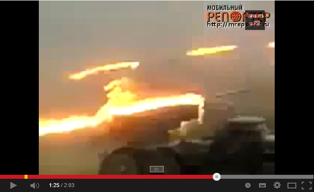

Видео с залпами российских «Градов» по Южной Осетии представили как события в Славянске
В социальных сетях активно распространяется видео, на котором якобы показано, как украинские войска обстреливают город Славянск Донецкой области из системы БМ-21 «Град».Видео подписано: «Новое!Обстрел Славянска системой Град 09 06 2014».
https://www.youtube.com/watch?v=9QFIdfG1Ly0
Однако это видео было снято не в июне 2014 года и не в Славянске, а 9 августа 2008 года в Южной Осетии около 14.00 часов дня.Оно появилось в Сети еще несколько лет назад с подписью «Залп российского реактивного дивизиона по позициям грузинской армии и артиллерии на Присских высотах».
https://www.youtube.com/watch?v=M9o18zIhNQk
Posted On: 2014-06-09T21:00:00

Content Date: 2014-06-09
Download Date: 2021-07-16
Document ID: L0C04FD3S